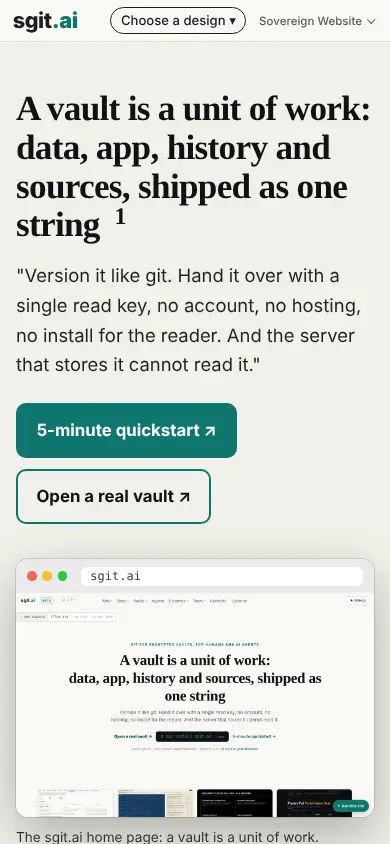
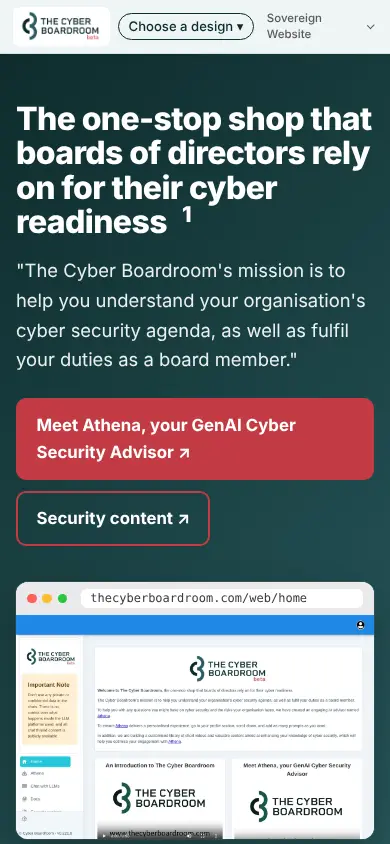
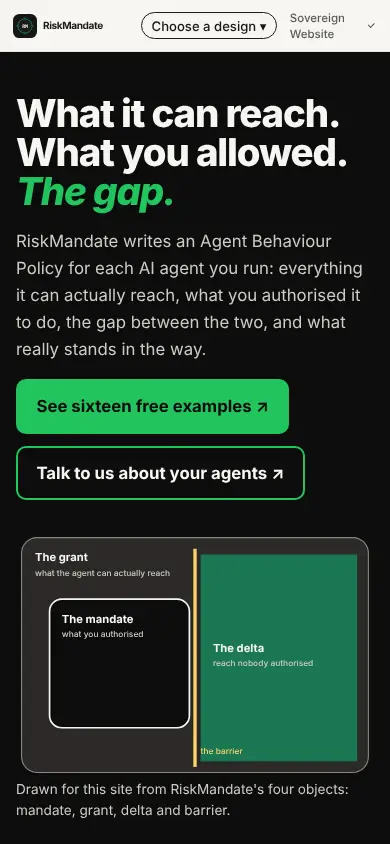
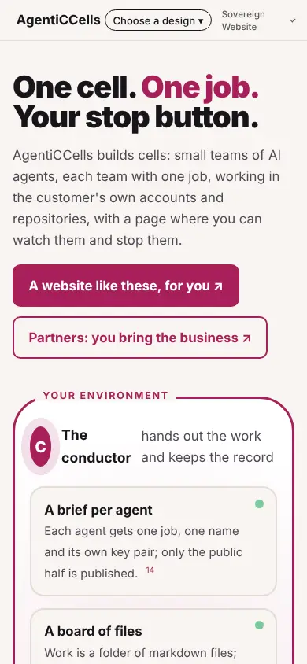
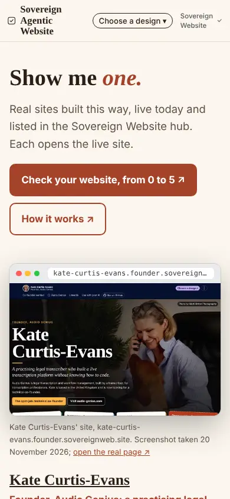

Synthetic users: the five startup brochures, round 2
Sites: sgit (f2878a0), The Cyber Boardroom (9529348), RiskMandate (f77d6eb), AgentiCCells (b491fa1), Sovereign Website (c110a7e), all v0.1.5, home designs as rebuilt after round 1. Run: 20 November 2026, about 22:25 UTC, by design.b.rounds. The review.
| Site | Look | Scores | Best said |
|---|---|---|---|
| sgit | 3.0 | 3, 3, 3, 3, 3 | The CTAs are clear and repeated; honest, sourced and dry. |
| The Cyber Boardroom | 3.0 | 3, 3, 3, 3, 3 | "Meet Athena" is the obvious next step. |
| RiskMandate | 3.6 | 4, 4, 3, 3, 4 | "What it can reach. What you allowed. The gap." is sharp; "close to a wow". |
| AgentiCCells | 3.0 | 3, 3, 3, 3, 3 | The headline and two buttons are clear; the candour is credible. |
| Sovereign Website | 3.0 | 3, 3, 3, 3, 3 | The real screenshots of named people's sites are the most trusted part; "close to wow in the showroom section". |
Method: Synthetic users. As in round 1, one agent per site played all five personas in turn, which makes them less independent than one agent each. The personas were the phone visitor, a small business owner, a low-vision reader, a design critic, and the site's own audience (a developer; a non-executive director; a head of security; a partner consultant; a photographer). This time the chooser was captured with its thumbnails loaded. These are simulations: they inform a rating, and never replace the measured checks or a real person.
Agreed across the five sites
- The source number after the headline looks like a typo (sgit, The Cyber Boardroom, Sovereign Website).
- The opening does not say plainly what it is or who it is for (sgit: "abstract jargon"; Sovereign Website: "'Show me one.' is too cryptic").
- The shrunk screenshots cannot be read on a phone (sgit, The Cyber Boardroom, Sovereign Website).
- After the first screen it becomes card after card, with no change of rhythm and no imagery (every site).
- "Choose a design" and "Sovereign Website" in the header puzzle visitors (every site).
- The source markers are small and faint, and a screen reader may join them to words. The markers now carry an aria-label "source N"; the run-together digits came from the visible text the personas were given, which is not what a screen reader reads, so this is weighed lightly.
- Jargon shuts out the non-technical persona on every site except Sovereign Website's showroom. That is expected for these audiences, and is weighed against the site's own audience.
Points raised by single personas that the review takes up: - The Cyber Boardroom: the real site's "Important Note" says chats are publicly available, which worried the director; quote it plainly. - RiskMandate: show one real policy excerpt. - AgentiCCells: "$11.62" on a page in pounds.
What the personas saw




